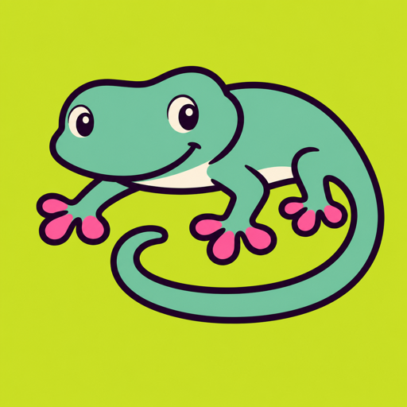

Frontend Niche Skills
A symptom is not a
diagnosis.
41 focused playbooks turn ambiguous UI reports
into testable next checks.
WebView
IME
Markup
Hydration
Forms
Dates
Auth
Payments
A11y
Design drift
